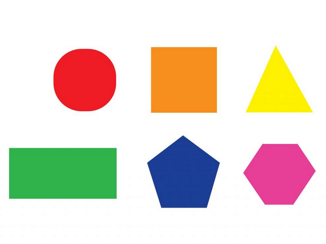
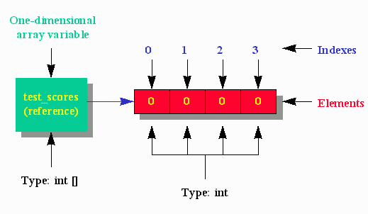
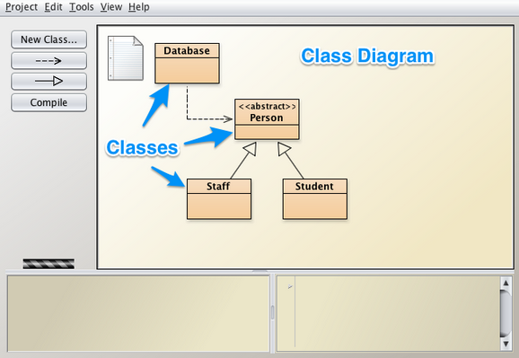

1: Introduction to Java programming language
Programming


Brief overview of course content with an introduction to BlueJ (IDE) and a preliminary discussion of classes and objects.
We continue exploration of classes and objects and introduce methods, parameters data types and access modifiers.
1: Introduction to Java programming language
/topic.png)
Sample solutions are provided here to the exercises set in the introductory lab.
2: Analysis & refactoring class

In this presentation we continue exploring elements of classes and the Java language including how source code is written and presented.
We examine some of the components of the ticket machine program. We look at some further elements of the Java language such as local variables and scope. We also introduce conditional statements, which offer choices between different actions as the program executes.
2: Analysis & refactoring class
/topic.png)
Sample solutions are provided here to the exercises set in this lab.
3: Object Interaction
Abstraction means ignoring details for the moment and concentrating on the problem at a higher level. Modularization comprises subdividing the problem into manageable parts each of which interacts in well-defined ways into the overall project.
Here we use the BlueJ clock to demonstate use of modularization. We develop a NumberDisplay class and adapt it for dual use, both to display hours and minutes.
3.1: Object Interaction (Solutions)
Sample solutions are provided here to the exercises set in the lab relating to shapes, the ClockDisplay and NumberDisplay classes.
4: Grouping Objects

We now introduce collection classes and control flow techniques to traverse such collections. Specifically we examine the ArrayList class and how to use the class to manage and manipulate data. ArrayList objects may store user-specified data types which are designated as parameters when the ArrayList variable is declared. ArrayList is an example of what is referred to as a generic class.
We explore the relationship between the String class and the Java primitive type char and observe that a String object is equivalent to an array of chars.
4.1: Grouping Objects (Solutions)
/topic.png)
Sample soolutions are provided here to the exercises set in the session Grouping Objects. The exercises relate to the BlueJ Notebook classs, control flow and encoding and provide an opportunity to acquire some experience in the use of arrays, lists and iterators.
Assignment-1
/topic.png)
This assignment is based on materials contained in the slide decks and labs in the first 4 topics, namely, Introduction to Java programming language, Analysis & refactoring class, Object Interaction and Grouping Objects.
Assignment-1 Solutions
/topic.png)
This is a sample solution set to Assignment 1 which is based on materials contained in the preentations and labs in the first 3 topics, namely, Introduction to Java programming language, Analysis & refactoring class and Object Interaction. There are 4 questions, the first 2 relating to simple class design, the 3rd on the subject of string manipulation and the final one requiring an extension to the BlueJ clock display.
5: More sophisticated behaviour

We discuss the application programming interface (API) of a class. We examine how random data may be generated. We revisit collections and examine the HashMap and HashSet generic classes. We introduce a range of topics that includes two-dimensional arrays of primitive types, anonymous objects, chaining and control flow using the switch, break and continue statements.
We obtain further practice in character manipulation by developing and exploring simple ciphers such as Caesar and Vigenere.
5.1: More sophisticated behaviour
/topic.png)
These are sample solutions to the exercises set in the lab in the session More sophisticated behaviour that relate to arrays, maps and sets as used in the development of a simple bank class. Included are solutions to the exercises in the second lab that deal with class and instance variables and methods.
6: Testing, Debugging, Searching & Sorting
Exhaustive testing of software is not feasible because the number of such tests is so great as to be impossible to perform within a reasonable time. What is possible, however, is the progressive construction of a suite of unit tests as the project progresses accompanied by test harness that allows this suite to be exercised on a regular basis and whenever changes take place to the code base or additional tests are added.
We discuss algorithmic complexity and how it is measured. We examine the performance differences between linear and binary search methods. Some indicative running times for different sort algorithms are presented to highlight the importance of choosing the correct implementation of a particular algorithm in the course of development.
6.1: Testing, Debugging, Searching & Sorting (Solutions)
/topic.png)
These are sample solutions to the exercises set in the labs in the session Debugging, Unit tests, Searching and Sorting.
7: Designing classes (Spacebook)
We examine the rules that apply to designing a class and apply those rules to develop an application named Spacebook. Concepts such as cohesion and coupling in the relationship between classes are briefly discussed. We explain the approach that is adopted in the labs to develop the application as a series of iterations and examine the content of each iteration.
Code without style may compile, run and indeed produce correct results. But code written without complying with a community-agreed style proves not only difficult to write but even more difficult to maintain. Here we present an initial approach to styling code based mostly on the rules laid out in the Google Java Style document.
7.1: Designing classes (Solutions)
/topic.png)
These are sample solutions to the exercises set in the lab in the session Designing classes (Spacebook).
Assignment-2
Based on materials covered in presentations and labs to date namely Introduction to Java language, Analysis and refactoring class, Object interaction, Grouping objects, More sophisticated behaviour, Testing, debugging, searching and sorting and Designing classes (Spacebook).
Assignment-2 Solutions
/topic.png)
This is a sample solution set to Assignment 1 which is based on materials covered in presentations and labs to date namely Introduction to Java language, Analysis and refactoring class, Object interaction, Grouping objects, More sophisticated behaviour, Testing, debugging, searching and sorting and Designing classes (Spacebook).
8: Java interface type
In this presentation we show how to use the Java interface type to unify common behaviour. In doing so we are demonstrating a concept known as polymorphism, a pattern in object oriented programming in which classes have different functionality while sharing a common interface.
We have already gained experience in using sorting algorithms but found it necessary to rewrite the algorithm when we wished to sort a new type. We show how, by using interfaces, we may write such an algoritm only once yet use it to sort a variety of types of our choosing.
8.1: Java Interface type (Solutions)
/topic.png)
9. Inheritance, Exceptions & Final Round-up

A class may inherit from another class and in doing so gain access to much of its behaviour and data. The inherited or derived class, in addition to having access to its parent, may specialize by adding its own methods and data or customizing selected methods of its parent.
An exception is a disruptive event that may occur during the execution of a program and if not anticipated and dealt with may result in the program producing incorrect results or crashing. Here we briefly discuss techniques to use exceptions to indicate the occurrence of errors during program execution and demonstrate how to catch or handle such exceptions.
Assignment-3
/topic.png)
This, the third and final, assignment is based on all materials covered in the course.